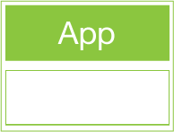
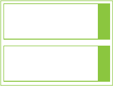

Docker 101
Build, Ship & Run

Qui suis-je ?
- Thomas LE ROUX
- Backend & Infrastructure Engineer chez Captain Dash
- @VenomberVeelen
Docker, pour qui ?
- Devs
- Ops
Docker, pourquoi ?
Développer, déployer et exécuter n'importe quelle application, n'importe où...
Linux Containers (LXC)
Son contenu
- Code source
- Bibliothèques
- Gestionnaire de paquet
- Application
- Données
- etc...
Son usage

- Application web
- API
- Base de données
- Service réseau
- Map/Reduce
- etc...
Son fonctionnement

Union file systems


Application

Duplication

Modification
Docker Hub
Atelier pratique
docker search
[automne@xps-dash ~]$ docker search debian
docker search
[automne@xps-dash ~]$ docker search debian
NAME DESCRIPTION STARS OFFICIAL AUTOMATED
ubuntu Ubuntu is a Debian-based Linux operating s... 2414 [OK]
debian Debian is a Linux distribution that's comp... 789 [OK]
google/debian 47 [OK]
neurodebian NeuroDebian provides neuroscience research... 13 [OK]
armbuild/debian ARMHF port of debian 4 [OK]
jesselang/debian-vagrant Stock Debian Images made Vagrant-friendly ... 4 [OK]
mschuerig/debian-subsonic Subsonic 5.1 on Debian/wheezy. 3 [OK]
eboraas/debian Debian base images, for all currently-avai... 3 [OK]
fike/debian-postgresql PostgreSQL 9.4 until 9.0 version running D... 2 [OK]
webhippie/debian Docker images for debian 1 [OK]
maxexcloo/debian Docker base image built on Debian with Sup... 1 [OK]
kalabox/debian 1 [OK]
takeshi81/debian-wheezy-php Debian wheezy based PHP repo. 1 [OK]
docker pull
[automne@xps-dash ~]$ docker pull node:4.2.1
docker pull
[automne@xps-dash ~]$ docker pull node:4.2.1
4.2.1: Pulling from library/node
7a42f1433a16: Downloading [===========> ] 18.35 MB/51.36 MB
e2a4fb18da48: Downloading [> ] 523.1 kB/34.36 MB
58016a5acc80: Download complete
3f8d2e13b904: Downloading [====> ] 1.564 MB/18.54 MB
17b9226197c6: Downloading [> ] 535.4 kB/128.5 MB
2251df231555: Download complete
3d88cbf54477: Downloading [======> ] 2.35 MB/12.65 MB
docker pull
[automne@xps-dash ~]$ docker pull node:4.2.1
4.2.1: Pulling from library/node
7a42f1433a16: Pull complete
e2a4fb18da48: Pull complete
58016a5acc80: Pull complete
3f8d2e13b904: Pull complete
17b9226197c6: Pull complete
2251df231555: Pull complete
3d88cbf54477: Pull complete
Digest: sha256:3c49d112e4f8ce20f1d7b56259f9bb7c4f06ea0acd2cc0672237c92bce6
Status: Downloaded newer image for node:4.2.1
docker images
[automne@xps-dash ~]$ docker images
docker images
[automne@xps-dash ~]$ docker images
REPOSITORY TAG IMAGE ID CREATED VIRTUAL SIZE
debian latest 8c00acfb0175 5 weeks ago 125.1 MB
debian 8.2 8c00acfb0175 5 weeks ago 125.1 MB
debian jessie 8c00acfb0175 5 weeks ago 125.1 MB
postgres 9.4 a7d662bede59 7 weeks ago 265.3 MB
postgres latest f33438ff9aef 3 months ago 265.5 MB
php 5.6 5dc942674030 3 months ago 444.4 MB
php 5.6-cli 5dc942674030 3 months ago 444.4 MB
node 4.2.1 3d88cbf54477 4 months ago 711.7 MB
docker rmi
[automne@xps-dash ~]$ docker rmi php:5.6
docker rmi
[automne@xps-dash ~]$ docker rmi php:5.6
Untagged: php:5.6
docker rmi
[automne@xps-dash ~]$ docker rmi php:5.6-cli
Untagged: php:5.6-cli
Deleted: 5dc94267403086f49501b7a859446761d984098a090237da93eb145e3015e632
Deleted: 4f8b26cff5e02c6508853319c45909e838ccfda238bcb269a0735e4f6646cfa6
Deleted: 4024646becfd2a426f4a323b7653ebc85f6a3ec5e4d6c3201a6a4a5ec864c50a
Deleted: f5b56acf0b55dc9d747bd27e034fb4b990d587190b258aee9fc2219f4809daea
Deleted: a64c83127667b873f073870f8aaccb1f04080104bb54246d5d178e8abaca1b69
Deleted: 5819d16b40399e1d7c339abfebf892a0924c51641ce10f3d0a3f178d6448b38c
Deleted: b562f252576cc5537effbb6a522f48822f93a8d5787d1ebfd40aad4dddf10605
Deleted: a475ee4751ecc37127caa1b976506a70cf47ef543d23f3405bc2bade567a70ee
Deleted: ea0bc0b96f434477ccb08948ee1a6540ee8c240a75e4e3881cee798c70309649
Deleted: 13a4541b11321fd65a9c88e557e2d55892ca3040a83c7bf8bb75c12eb43312a5
docker run
[automne@xps-dash ~]$ docker run --rm -it debian /bin/bash
root@51eefd775542:/#
docker run
[automne@xps-dash ~]$ docker run --name=dev-db \
> -e POSTGRES_USER=user \
> -e POSTGRES_PASSWORD=foobar \
> -d -p 5432:5432 postgres
5ac9e23367f5d16e258355f40188cce93ee32bf79d1e85fa314db0f225fe9611
docker ps
[automne@xps-dash ~]$ docker ps
CONTAINER ID IMAGE COMMAND
5ac9e23367f5 postgres "/docker-entrypoint.s"
CREATED STATUS PORTS NAMES
2 minutes ago Up 2 minutes 0.0.0.0:5432->5432/tcp dev-db
docker ps
[automne@xps-dash ~]$ docker ps -a
CONTAINER ID IMAGE COMMAND
5ac9e23367f5 postgres "/docker-entrypoint.s"
843be211f89b postgres "/docker-entrypoint.s"
CREATED STATUS PORTS NAMES
2 minutes ago Up 2 minutes 0.0.0.0:5432->5432/tcp dev-db
6 days ago Exited (0) 2 days ago plague-db
docker start/stop
[automne@xps-dash ~]$ docker stop dev-db
[automne@xps-dash ~]$ docker start dev-db
[automne@xps-dash ~]$ docker restart dev-db
docker kill
[automne@xps-dash ~]$ docker kill dev-db
docker rm
[automne@xps-dash ~]$ docker rm dev-db
Dockerfile
Dockerfile
#
# Dockerfile for Scala on JDK 8
#
FROM debian:8.2
MAINTAINER november-eleven
ENV DEBIAN_FRONTEND noninteractive
RUN apt-get update && apt-get upgrade -y
ENV DEBIAN_BACKPORTS "deb http://httpredir.debian.org/debian jessie-backports main contrib non-free"
RUN echo "$DEBIAN_BACKPORTS" > /etc/apt/sources.list.d/jessie-backports.list && apt-get update \
&& apt-get -t jessie-backports install openjdk-8-jdk curl -y \
&& curl -L https://dl.bintray.com/sbt/debian/sbt-0.13.9.deb -o /tmp/sbt.deb \
&& dpkg -i /tmp/sbt.deb && rm -f /tmp/sbt.deb
ENV JAVA_HOME /usr/lib/jvm/java-8-openjdk-amd64
docker build
[automne@xps-dash ~]$ docker build -t scala ~/scala/Dockerfile
docker build
[automne@xps-dash ~]$ cd ~/scala/Dockerfile
[automne@xps-dash ~]$ docker build -t scala .
docker build
Step 0 : FROM debian:8.2
---> 8c00acfb0175
Step 1 : MAINTAINER november-eleven
---> 71328f88e04a
Step 2 : ENV DEBIAN_FRONTEND noninteractive
---> df2b2459ecd1
Step 3 : RUN apt-get update && apt-get upgrade -y
---> 17826a02626c
Step 4 : ENV BACKPORTS "deb http://httpredir.debian.org/debian jessie-backports main contrib non-free"
---> 93abf960dba6
Step 5 : RUN echo "$BACKPORTS" > /etc/apt/sources.list.d/jessie-backports.list && apt-get update &&
apt-get -t jessie-backports install openjdk-8-jdk curl -y && curl -L https://dl.bintray.com/sbt/debian/sbt-0.13.9.deb
-o /tmp/sbt.deb && dpkg -i /tmp/sbt.deb && rm -f /tmp/sbt.deb
---> 0c7f15474763
Step 6 : ENV JAVA_HOME /usr/lib/jvm/java-8-openjdk-amd64
---> 23ccadbdfce2
Successfully built 23ccadbdfce2

WebApp avec Play 2.4: Dockerfile
# Dockerfile for play 2.4 app
FROM scala:latest
MAINTAINER november-eleven
ENV APP_SOURCE /usr/local/app
ENV APP_RUNTIME /var/www/app
RUN mkdir -p ${APP_SOURCE} && mkdir -p ${APP_RUNTIME}
ADD . ${APP_SOURCE}
WORKDIR ${APP_SOURCE}
RUN sbt clean && sbt stage && cd "target/universal/stage" && tar -zcf "${APP_SOURCE}/app.tar.gz" . \
&& tar -C "${APP_RUNTIME}" -xvf "${APP_SOURCE}/app.tar.gz"
EXPOSE 8080
WORKDIR ${APP_RUNTIME}
RUN rm -rf "${APP_SOURCE}"
CMD ["./bin/app", "-Dpidfile.path=/dev/null", "-Dhttp.port=8080", "-J-server", "-J-d64"]
WebApp avec Play 2.4: Build
[automne@xps-dash ~]$ docker build -t myapp .
WebApp avec Play 2.4: Ship
[automne@xps-dash ~]$ docker run --rm -it -p 8080:8080 myapp